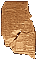
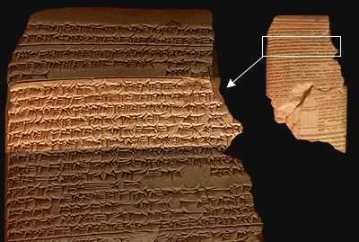

Diviner's manual

The highlighted part of this tablet reads:
|
Twelve are the months of the year, 360 are its days.
Study the length of the year and look (in tablets) for the timings of the disappearances, the visibilities (and) the first appearance of the stars, (also) the position (?) of the Field star at the beginning of the year, the first appearance of the sun and the moon in the months Addaru and Ululu, the risings and first appearances of the moon as observed each month; watch the 'opposition' of the Pleiades and the moon, and (all) this will give you the (proper) answer, (thus) establish the months of the year (and) the days of the months, and do perfectly whatever you are doing.
|
back...
|